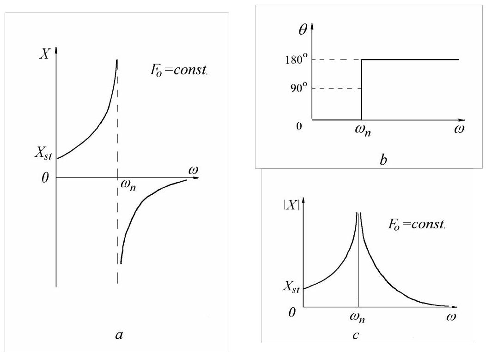
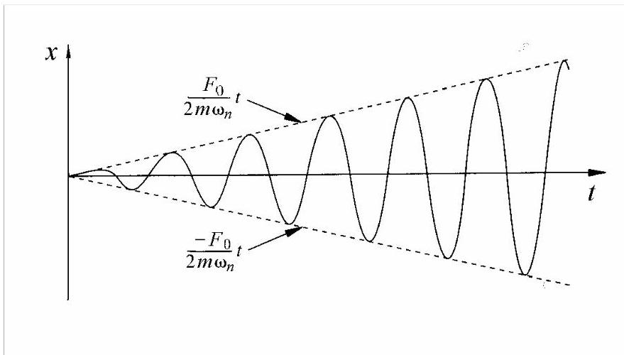
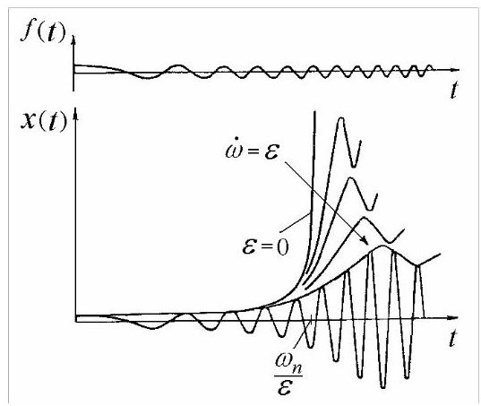
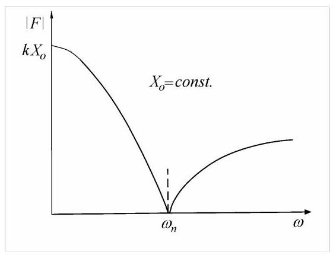
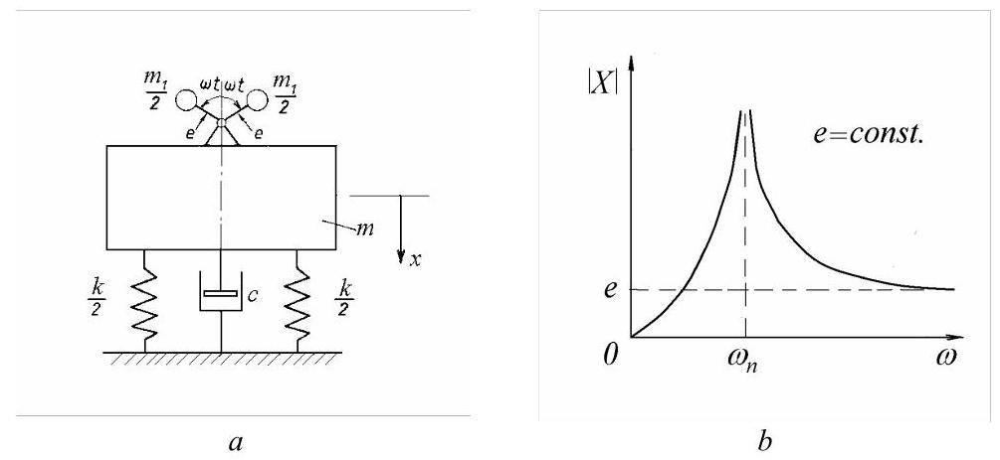
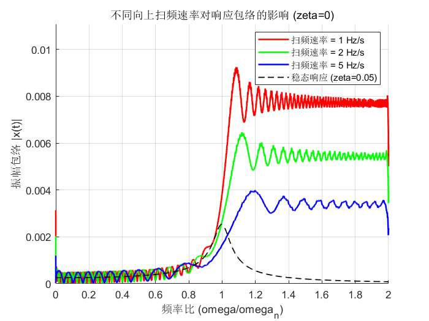

第5篇
2.2.4 频率响应曲线
有必要更仔细地研究稳态响应幅值的频率依赖性
式(2.30)右侧\({X}_{st}\)系数的绝对值称为动态放大因子(dynamic magnification factor)。
图2.11中的\(a\)给出了振幅\(X\)随驱动频率\(\omega\)变化的曲线。当\(\omega /{\omega }_{n} < 1\)时，纵坐标为正，力与运动同相；而当\(\omega /{\omega }_{n} > 1\)时，纵坐标为负，力与运动\({180}^{0}\)反相(见图2.11, b)。在\(\omega /{\omega }_{n} < 1\)情况下，当力向下推时，质量位于静平衡位置下方；而在\(\omega /{\omega }_{n} > 1\)情况下，当力向下推时，质量位于平衡位置上方。

图2.11
通常这种相位关系被认为无关紧要，因此共振曲线按图2.11中的\(c\)绘制，纵轴取振幅的模。这通常称为频率响应曲线(frequency response curve)。
2.2.5 共振
在\(\omega /{\omega }_{n} = 1\)处，当激励频率与系统固有频率重合时，振幅趋于无限大(因为系统无阻尼)。这一现象称为“共振（resonance）”，固有频率有时也称为“共振频率”。
在\(\omega = {\omega }_{n}\)处，弹簧力与惯性力相互平衡，激励力使无阻尼系统的运动振幅无限增大。有阻尼系统在共振时具有有限振幅，且力与位移之间的相位角为\({90}^{0}\)(见图2.28)。
考虑从静止开始，质量-弹簧系统受到瞬时幅值为\({F}_{0}\cos {\omega }_{n}t\)的力作用，其中\({\omega }_{n}\)为固有频率。当\(\omega\)恰好等于\({\omega }_{n}\)时，解(2.27)不再有效。将\(F\left( \tau \right) = {F}_{0}\cos {\omega }_{n}\tau\)代入方程(2.21)得到
因此，当在共振激励时，无阻尼系统的振幅随时间线性增长。由于激励为余弦函数而响应为正弦函数，二者之间存在\({90}^{0}\)的相位角。利用微积分中的极限定理也可得到相同结果。

图2.12
非零初始条件下的解现在具有如下形式
图2.12给出了零初始条件下\(x\left( t\right)\)随时间的变化曲线。可以看出\(x\left( t\right)\)无限增长，但位移振幅的建立需要一定时间。
2.2.6 穿越共振
对于大多数实际振动系统，稳态振幅迅速达到，其趋近速率通常无关紧要。
然而，当振动系统被驱动穿越共振，即激励频率以速度\(\varepsilon = \mathrm{d}\omega /\mathrm{d}t\)扫频时，系统来不及达到稳态，即使无阻尼系统的共振振幅也是有限的。因此，在穿越共振时，对变频率力的响应可能具有重要意义。
响应呈现类共振峰，有时随后出现类拍响应。若频率向上扫频(图2.13)，峰值频率高于稳态条件下的值，峰值振幅较低且共振曲线宽度较大。若频率向下扫频，峰值频率低于稳态共振频率。在图2.13中，\(f\left( t\right) = {F}_{0}\sin \left( {\frac{1}{2}\varepsilon {t}^{2} + \frac{\pi }{2}}\right)\)和\(\varepsilon = const\)。

图2.13
扫频速率的影响取决于系统阻尼，因为阻尼越小，达到稳态振动幅值所需的时间越长。图2.13是在零阻尼条件下绘制的。
2.2.7 恒定位移幅值的共振
共振是指:在恒定幅值的力作用下产生最大运动，或维持给定运动幅值所需力最小的状态。
当力幅\(F\)可变而位移幅值\({X}_{0}\)保持恒定时，方程(2.24)可写为
图2.14给出了力模量随驱动频率变化的曲线，其中\({X}_{0} = const\)。对于无阻尼系统，共振时所需力为零，因为弹簧力与惯性力相互平衡。

图2.14
共振是一种以最小激励产生最大动态响应的状态。
2.2.8 由不平衡旋转质量引起的激励
许多系统的振动由不平衡旋转质量产生的驱动力引起。与前面讨论的恒定力幅情况不同，旋转质量型力的幅值与振动频率的平方成正比。因此振动力为\({m}_{1}e{\omega }^{2}\cos {\omega t}\)，其中\({m}_{1}\)为偏心质量，位于偏心距\(e\)处(图2.15, a)。
该力产生的受迫振动幅值可通过在方程(2.24)中用\({m}_{1}e{\omega }^{2}\)替换\({F}_{0}\)得到。于是
需指出\(m\)为总振动质量，已包含质量\({m}_{1}\)。

图2.15
图2.15,\(b\)为根据方程(2.34)绘制的\(X\)绝对值随圆频率\(\omega\)变化的曲线，其中\(e =\)为常数。曲线从零开始，在共振处趋于无穷大，并在高频时降至\(e\)。
MATLAB Demo: 穿越共振
该代码模拟了一个单自由度系统在不同速率的向上扫频激励下的响应。扫频激励的频率从低到高线性变化。
图表将显示不同扫频速率下响应的振幅包络线与频率比的关系，并与稳态响应进行比较。这可以清晰地展示扫频速率越快，峰值振幅越低，且峰值对应的频率偏移越大的现象。
% 穿越共振的MATLAB演示
% 该脚本模拟了单自由度(SDOF)系统在不同向上扫频速率下的响应。
clear; clc; close all;
%% 1. 系统参数
m = 1; % 质量 (kg)
fn = 10; % 固有频率 (Hz)
omega_n = 2 * pi * fn; % 固有频率 (rad/s)
k = m * omega_n^2; % 刚度 (N/m)
zeta = 0; % 阻尼比 (根据文本所述为零阻尼)
c = zeta * 2 * sqrt(m*k); % 阻尼系数
%% 2. 激励参数
F0 = 1; % 激振力幅值 (N)
sweep_rates_hz_s = [1, 2, 5]; % 不同的扫频速率 (Hz/s)
%% 3. 绘图设置
figure('Name', '不同扫频速率下的穿越共振');
hold on;
colors = ['r', 'g', 'b']; % 为不同速率设置不同颜色
max_amp = 0; % 用于自动调整y轴范围
%% 4. 循环进行不同速率的向上扫频仿真与绘图
for i = 1:length(sweep_rates_hz_s)
% 当前扫频速率
current_sweep_rate = sweep_rates_hz_s(i);
epsilon = 2 * pi * current_sweep_rate; % 扫频速率 (rad/s^2)
% 仿真时间范围
t_end_up = (2 * fn) / current_sweep_rate;
t_span_up = [0, t_end_up];
% 向上扫频的激励函数: f(t) = F0*cos(0.5*epsilon*t^2)
% 瞬时频率: omega(t) = epsilon*t
force_func_up = @(t) F0 * cos(0.5 * epsilon * t.^2);
% 定义常微分方程(ODE)系统
% y(1) = x (位移), y(2) = dx/dt (速度)
ode_fun = @(t, y, force_func) [y(2); (force_func(t) - c*y(2) - k*y(1))/m];
% 求解ODE
[t_up, y_up] = ode45(@(t,y) ode_fun(t, y, force_func_up), t_span_up, [0; 0]);
x_up = y_up(:,1);
% 后处理：计算包络和频率比
env_up = abs(hilbert(x_up));
freq_ratio_up = (epsilon * t_up) / omega_n;
% 更新最大振幅
if max(env_up) > max_amp
max_amp = max(env_up);
end
% 绘制当前速率下的响应包络
plot(freq_ratio_up, env_up, 'Color', colors(i), 'LineWidth', 1.5, ...
'DisplayName', ['扫频速率 = ' num2str(current_sweep_rate) ' Hz/s']);
end
%% 5. 绘制稳态响应作为对比
% 为了避免稳态响应图中出现无穷大，添加了少量阻尼
zeta_steady = 0.05;
omega_plot = linspace(0, 2*omega_n, 1000);
freq_ratio_plot = omega_plot / omega_n;
X_steady = (F0/k) ./ sqrt((1 - freq_ratio_plot.^2).^2 + (2*zeta_steady*freq_ratio_plot).^2);
plot(freq_ratio_plot, X_steady, 'k--', 'LineWidth', 1, 'DisplayName', '稳态响应 (zeta=0.05)');
%% 6. 图形修饰
title('不同向上扫频速率对响应包络的影响 (zeta=0)');
xlabel('频率比 (omega/omega_n)');
ylabel('振幅包络 |x(t)|');
legend('show', 'Location', 'northeast');
grid on;
axis([0 2 0 1.2*max_amp]);
hold off;
